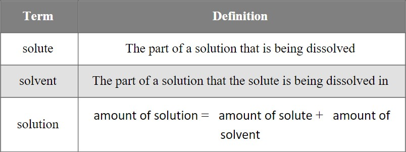

Question 1
Fossils are the preserved remains of ancient life, such as bones, teeth, wood, and shells. Trace fossils represent the presence or behavior of ancient life, without body parts being present. Footprints, worm burrows, and insect nests are examples of trace fossils.
Sedimentary rock contains fossils because it was built up layer upon layer, often trapping and preserving animals, plants, footprints, and more within the layers of sediment. If all the conditions are right, fossils are formed as the layers of sediment turn into rock.
Question 2
Molarity (M) is the unit that chemists commonly use to measure concentration. It is calculated as follows:
molarity=moles of a solute/volume (in liters) of the entire solution
Note: A mole (mol) is a unit used to count the number of molecules in a substance. (1 mole≈602 sextillion molecules)
Question 3
Carbon-14 Dating
Levi: "How does carbon-14 dating work?”
Professor: "Well, as we learned in our recent lesson, all living things are made of carbon. What we didn’t discuss is that there are different types of carbon. Almost all of the carbon that makes up living organisms is carbon-12, but there is also a very tiny amount amount of carbon-14. As long as a plant or animal is alive, it will have a fairly constant amount of carbon-14. This is because even though carbon-14 slowly decays over time, the living organism will also ingest more carbon-14 at about the same rate. Plants absorb carbon-14 during photosynthesis and animals absorb carbon-14 when they eat plants.”
Levi: “But what happens when plants, animals, and people die?”
Professor: “When living organisms die, they stop ingesting more carbon-14. Every 5,730 years, the amount of carbon-14 is cut in half as it slowly decays. Scientists can then measure the amount of carbon-14 left in an organism and use the half-life to approximate when it died.”
Levi: “Ah, so that’s how Dr. Jonnes came up with that date! Thanks, Professor!”
Question 4
Population Growth
In ecology, a population is defined as a group of organisms of the same species living together in a particular geographic area. Populations grow as new individuals are added. Under ideal conditions, where organisms have unlimited space and resources, populations will continually increase. The growth rate of a population under these conditions is described by the equation G=rN, where G represents the growth rate of the population, r represents the per capita rate of increase, and N represents the number of individuals in the population.
Question 5
Strong or Weak Solutions Based on the Light Bulb Experiment
A solution is said to be strong or weak based on whether or not it can conduct electricity. If a solution contains a large number of ions, it will conduct electricity more easily. Therefore, the stronger the solution, the brighter the lightbulb (the more lumens it produces).
An experiment was set up with a light bulb in order to test if a variety of solutions were able to conduct electricity. The results are shown in the following table.
1. An archaeologist found 11 fossils in a recent expedition. If he wants to choose four of them to study closer, how many ways can he choose four fossils from the eleven he found?
2. Consider the following solution:
3.00 mol of sodium chloride (NaCl) has been dissolved in some water. There are 2.00 L of the resulting solution.
What is the molarity of the resulting solution?
3. Suppose there are 25 g of carbon-14 in an organism. How much carbon-14 will be present 5,730 years after the organism dies?
4. For a population of 400 brown pelicans, with an r-value of 0.25 per year, how many pelicans will there be in the population after one year under ideal conditions?
5. A chemistry professor tells the class that a weak solution will produce a brightness of less than 500 lumens. She then randomly assigns each lab group one of the solutions listed in the table.
What is the probability that Hannah and her lab group will receive a strong solution?